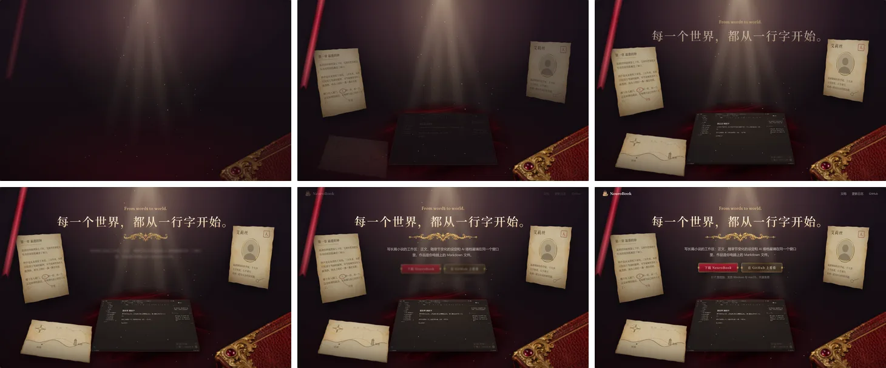
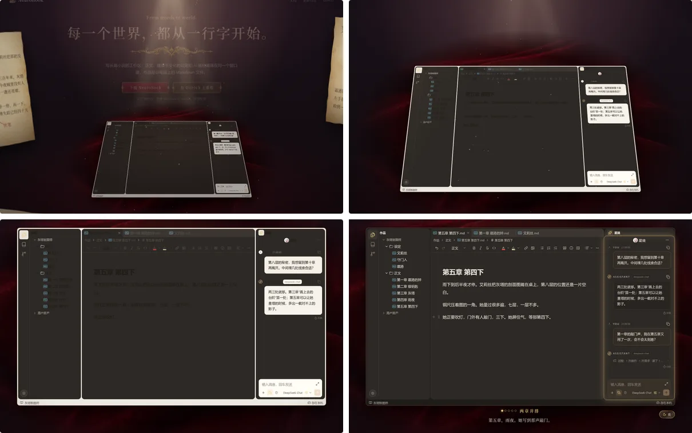
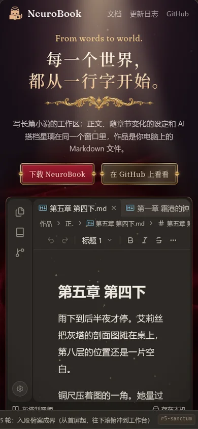
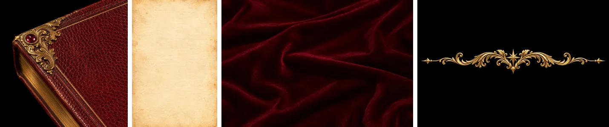
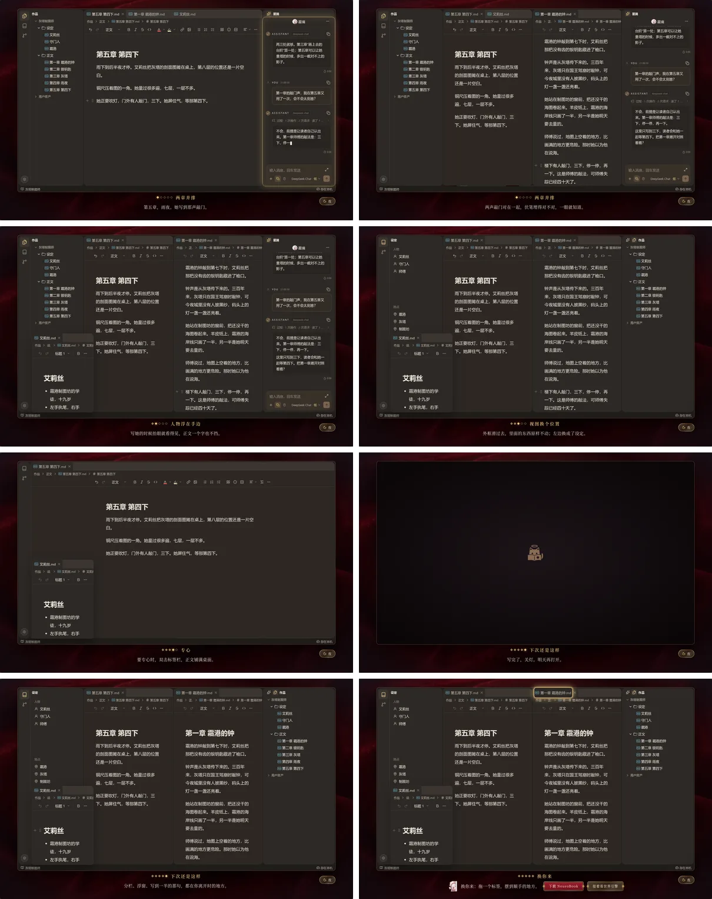

产品介绍首页：入殿·俯案成界（第 5 轮）
照第 4 轮的答复改：首屏方向不变，材质换成生成的照片，按钮加金边往皇室奢华感走，工作台缺省用夜间配色（可以切回昼），首句用 e3 并配上 From words to world.；第一幕放慢、讲清楚，把浮窗、视图换位置、关掉再打开三步加回来，做得和首屏一样华丽。
首屏这样定下来吗？
推荐定下来，往下做第二幕：纵深、光、俯冲接真工作台在第 4 轮已经成立，这一轮补上了器物感（皮面、羊皮纸、丝绒都是照片质感）和奢华的细节；剩下的小处（比如题辞的字体）可以在做后面几幕时顺手调。
首屏终态。题辞 From words to world. 用品牌字标的 Fraunces，和首句呼应；标题下一道金色花饰从中间往两边展开；按钮是双线金边、两端各一粒金菱形的牌子。
开场（慢放，左上到右下，约 2.1 秒）

俯冲与落地：工作台缺省是夜间配色


左：滚过 16%、50%、落地，和第一幕开头。夜间配色写在页面根上（主题有一批颜色从根上派生，只改工作台那一块跟不上），强调色换成金；落地后字幕那一条右端有昼夜切换。右：窄屏。
生成的材质

书角的黑底抠成了透明，花饰的黑底拆成了透明的金。共生成 4 张，没有重发。
第一幕这样讲清楚了吗？其余几幕照着做吗？
推荐照着做：每一拍先在字幕里说要做什么，一支金色指针慢慢做给你看，做完再说得到了什么；字幕上一行的五粒金菱形告诉你走到第几拍。

- 两章并排：第五章打出“门外有人敲门，三下。她屏住气，等那第四下。”；作者在对话栏里问会不会太刻意，星璃读了第一章边打边答（她那一栏亮一圈金）；第一章的标签先亮一圈金，指针把它拖到右半边，两章并排，两声敲门同时描金。
- 人物浮在手边：艾莉丝的设定拖成浮窗，落在作品树下面，不挡正文。
- 视图换个位置：作品树整块拖到右栏，左边换成设定（星璃收在右栏的入口里）。
- 专心：双击标签栏，正文铺满桌面；再双击还原。
- 下次还是这样：关灯，存盘并按此刻的样子真的重新挂一台工作台，再开灯：分栏、浮窗、打到一半的那句、对话都还在。
最后交给访客：第一章的标签上一圈金环，隔一会儿往右挪一下示意能拖；字幕那一行是星璃的小贴纸、邀请与两个金边按钮。一拍约一屏半的滚动，整幕约九屏；访客一按工作台，演示就让开。
已定
- 首页给搜索进来的人，做得像产品介绍；书庭这类页面另做、自由发挥（2026-11-26）
- 截图尽量少：直接把工作台复原，让人体验到拖动、分屏与布局动画的丝滑（第 1 轮）
- 第一屏把介绍说明白，同时要有高级精美的动画，让人想往下滚；往下滚进入滚动动画（第 1 轮）
- 基调取 w00050 t06 契约仪式页的史诗、神圣、西幻气氛，不复制；现有的 NovelAI 场景图不直接用（2026-11-26）
- 要讲的功能：写作与编辑器、世界引擎、剧情（在做）、星璃与 Agent、本地与开源、插件与 SDK、桌面版、模型自选；llmlint 不列（2026-11-26）
- 先做方向一《入殿·俯案成界》；材质可以用生成的贴图，首页可以用星璃的立绘与贴纸（2026-11-26）
- 首屏方向不变、先打磨材质；按钮加金边一类的装饰，往皇室奢华感走；工作台缺省夜间配色、可以切换（第 4 轮）
- 第一幕放慢讲清楚，加回浮窗、视图换位置、关掉再打开，和首屏一样华丽（第 4 轮与会话）
- 首句用 e3“每一个世界，都从一行字开始。”，配 From words to world.（第 4 轮与会话）